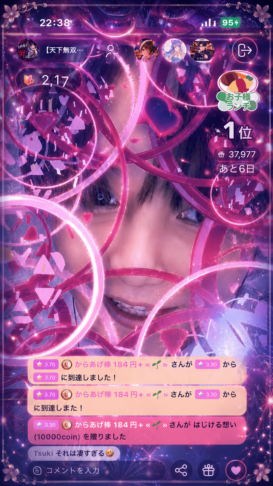
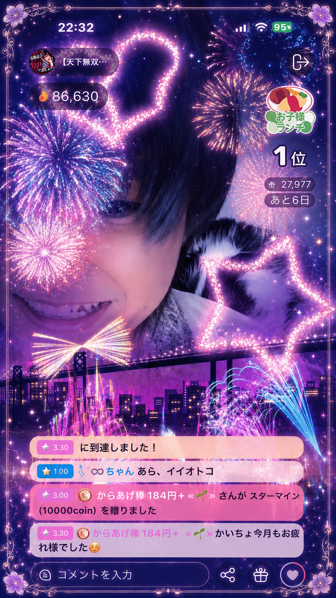

June's Monthly MVP｜からあげ棒
からあげちゃん
まず初めに V2 本当におめでとう。
月末の大逆転、まじでエンタメやってんなーって思いました（笑）。
かいちょには、いい声でリスナーを魅了したり、二次元の非日常を与えるような配信はできない。
万年元気な人なんかホントに一握りで、プライベートで嫌なことがあったり、会社で理不尽に巻き込まれたり、元から精神疾患を抱えてたり、はたまたなんで病んでるのかわからなかったり。
そんな人たちを異次元のパフォーマンスで、元気にするような配信なら得意だよ。
配信界隈なんて、特に社会の常識が通用しない事が多いと思う。
ライブ配信を仕事にできるようになったのはとてもありがたい事なんだけど、その反面、10年以上前の配信界隈を知らない今の若い人たちはライブ配信の起源なんか到底知る由もないから、本来【Give ＞ Take】のはずが【Take ＞ Give】になってるのが事実。
これは、ライバーが悪いわけじゃなく理念が浅い。事務所がライバーに、間違った形でライブ配信という文化を伝えてしまってるからだと思ってる。
かいちょは、ライブ配信を本来あるべき姿に戻したくて一念発起した。
メーターやイベントやバッジの話しかしない人、ノーギフ日を設ける人、他のライバーさんの枠に自枠の宣伝文言（〇日+6、〇〇イベント参戦など）を名前につけたまま枠回りする人。
こんな非常識がまかり通ってしまうのが現状。嫌気がさすよね。
工藤、からあげちゃん、まじで見てて。
例え10年かかろうが20年かかろうが、絶対ライブ配信全体をエンタメに変えるから。
あと実はね、リスナーにとって都合が悪くて、ライバーにとって都合のいいエンタメっていうのが存在してるの。
例えば、トプバナのときの話覚えてるかな？
かいちょはただエントリーしただけで、ガチイベ参戦でもなんでもなかったのに、からあげちゃんが勝手に一人で燃えて、1位とらせてくれたじゃん？
ああいうのって、普通ありえないわけ。

今回の月末の大逆転だってそうだよ。
「事前に用意してるマンスリープライズあるから、絶対マンスリー塗り替えないでね？」
このフリって、本来リスナーにとっては都合が悪いエンタメなんだよ。要求される額が現実的じゃなかったりするからさ。
でも、からあげちゃんそういうの楽しくなって、やっちゃうタイプでしょ？

もう完全に、こっち側の人間じゃん...
かいちょがからあげちゃんの事好きな理由って、そこに詰まってるんだよ。
実はね、初めてからあげちゃんの配信を見に行った時、めちゃくちゃ衝撃受けたんだよ。
「え！あのオヤジコメ感のからあげ棒が、こんな華奢な配信すんの？？？」
ってwwwwwwwwwwwwwwwwww
知らないうちに、色気づいたコメ感になってるし！
いつの日かのからあげちゃんのXのポストでさ、「もっと女の子っぽいコメントできるようになりたい！」みたいなのあった記憶があるんだけど、もうなれてるよ（笑）。
からあげちゃんは、どっちが楽しい？
声と幻想に癒されて、性癖に刺さってるとき。
圧倒的なパフォーマンス枠で、思いっきり腹抱えて笑ってるとき。
多分、どっちもからあげちゃんには必要な栄養素なんじゃない？
その日の気分に合わせて、なんのストレスもなく、リスナー生活をエンジョイしてくれることを切に願ってるよ。
からあげちゃん。
君がやってることは、なにも間違ってない。
もっと堂々と胸張って生きて。
君の主張が通らなかったり、曲解されるなら、もうそれは世も末ってこと。
人間力低い人を、わざわざ相手にしなくていい。
君は、君の世界で生きなさい。

これは記録じゃない。
からあげちゃんとの関係の
“到達点の証明”
And simultaneously,
まだ途中であるという宣言。
Palmuで覇権を握るその日まで。
その景色を一緒に見てほしい。
からあげちゃんとの関係の
“到達点の証明”
And simultaneously,
まだ途中であるという宣言。
Palmuで覇権を握るその日まで。
その景色を一緒に見てほしい。